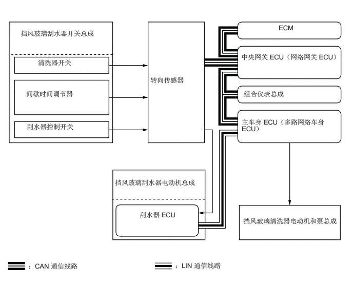

5.656,0.479 6.125,0.688
0.458,0.198
10
false
ECM
4.896,1.073 7.167,1.646
2.26,0.563
10
false
中央网关 ECU（网络网关 ECU）
4.948,1.823 6.813,2.104
1.854,0.271
10
false
组合仪表总成
4.906,2.396 6.667,2.76
1.75,0.354
10
false
主车身 ECU（多路网络车身 ECU）
4.938,4.406 6.948,4.875
2,0.458
10
false
挡风玻璃清洗器电动机和泵总成
3.052,1.542 4.083,1.771
1.021,0.219
10
false
转向传感器
0.417,0.594 2,1.01
1.573,0.406
10
false
挡风玻璃刮水器开关总成
0.771,1.188 1.792,1.448
1.01,0.25
10
false
清洗器开关
0.531,1.823 1.906,2.073
1.365,0.24
10
false
间歇时间调节器
0.542,2.49 1.927,2.719
1.375,0.219
10
false
刮水器控制开关
2.333,3.625 4.104,4.156
1.76,0.521
10
false
挡风玻璃刮水器电动机总成
2.833,4.281 3.604,4.51
0.76,0.219
10
false
刮水器 ECU
0.573,5.323 2.313,5.552
1.729,0.219
10
false
：CAN 通信线路
3.552,5.313 5.292,5.542
1.729,0.219
10
false
：LIN 通信线路